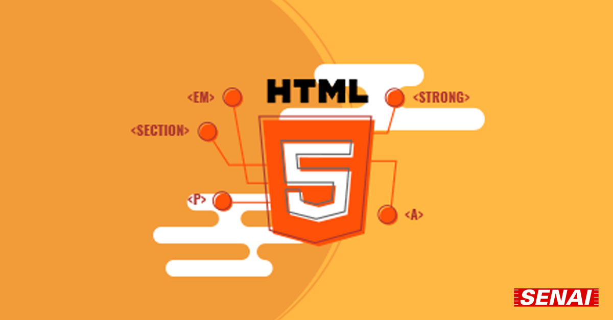
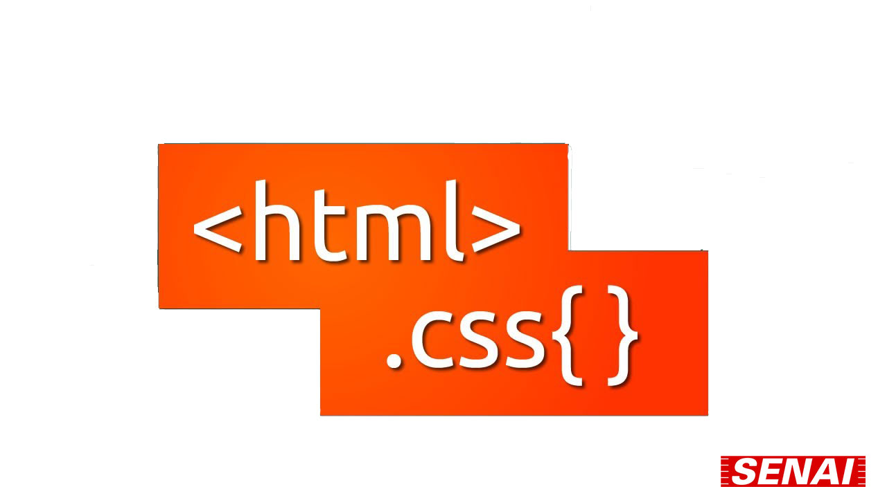

LIMA - Linguagem de Marcação
A matéria de Linguagem de Marcarção é dada pelo professor Alexsandro Bittencourt, focada no front-end na criação de website e interfaces que interajam diretamente com o usuário.
HTML
O curso de Linguagem de Marcação começa falando sobre a diferença entre front-end e back-end e o que é a programação e a linguagem de marcação. Depois se é falado sobre as tags que compõe um HTML simples, como a própria tag "html", também sobre a "head", por fim a "body" e depois sobre tags que ajudam na formatação do site como título no navegador, título da página, subtitulo e frase.
DIV
Depois de consolidado as tags e recursos que o HTML é capaz de utilizar, é falado sobre "div", "section", "nav" e "id", sendo explicado que são tags que servem como boa conduta ajudam na organização do código para outros desenvolvedores.
CSS
Após a finalização do aprendizado de como se utiliza o HTML e suas tags, chega então o momento de elevar o nível e é aprensentado aos alunos o estilo em cascata, mais conhecido como CSS, que é utilizado para uma formatação da interface do site, menos trabalhosa e mais efeciente.
HTML e CSS
A partir disso é discutido as peculiaridades do CSS junto do HTML para uma formatação organizada do seu website, envolvendo displays flex e grids e outros truques de interações com o mouse.